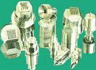
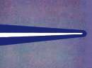
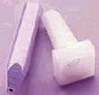
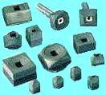

Die Attach
Tools
Die attach, or
the process of mounting the silicon die of a semiconductor device on its
package die pad, substrate, or cavity, requires
various tools to achieve its objective.
Die attach
equipment (or die bonders) use
epoxy
dispensing tools
to put die attach material such as silver-filled epoxy or silver-filled paste on the die pad,
substrate, or cavity. Dispensing tools come in standard body styles that
fit common die bonders or they may be customized to specific requirements.
For quick and easy set-up, die bonders are usually equipped with adaptor
heads that allow quick replacement of dispensing tool tips.

Fig. 1.
Various Types of Epoxy Dispensing Tools
Aside from dispensation, die
attach adhesives may also be deposited on the die pad, substrate, or
cavity by stamping.
Epoxy stamping tools
can either be rubber or steel. Epoxy stamping tools can stamp various
patterns of epoxy on the pad, depending on the needs of the application.
A
dot matrix
pattern, for instance, ensures that a consistent amount of epoxy is
deposited on the die pad every time. Different dot matrix patterns
are available to cater to the needs of a wide range of die sizes. The
epoxy is spread when the die is pressed in place.
The
rubber
epoxy stamping tool is used in large dice, while the
steel
stamping tool is usually used
for small to medium die sizes. Steel stamping tools for medium-sized dice
often have a
rectangular tip, while
those for small dice often use a
round
tip.
Immediately prior to die
pick-up, the die must be ejected from the wafer tape for easier retrieval.
This is achieved by using
push-up needles
or die ejector pins,
which push upwards on the die backside to dislodge the die off the wafer
tape.
Such pins usually have a smooth, highly-polished taper and a small angle,
allowing gentle penetration of the wafer tape with very little tape
disturbance. One or more ejector needles may be used, depending on the die
size and aspect ratio.

Fig. 2.
Photo of an ejector needle tip
Die
attach equipment use a die attach collet or
pick-up tool
to pick up the die from the wafer tape either by
surface contact or by an ejector pin pushing the die up off the surface
of the adhesive film. Vacuum holds the die in the collet or pick-up tool
during the transfer to the
die pad, substrate, or cavity.
|
 |
|
Fig. 3.
Examples of Die Attach Collets |
The tips of die attach pick-up tools may be made of
tungsten carbide, but
this material can cause mechanical damage on the die surface. If die
scratching is a concern, antistatic plastic
tools must be used instead. Replaceable
rubber tips (see Fig. 3) may also be used on fragile
dice.

Fig. 4.
Rubber Tips for Die Pick-up Tools
See Also:
Die Attach;
Die Attach Materials;
Assembly Equipment;
Assembly Accessories
HOME
Copyright
© 2001-2004
www.EESemi.com.
All Rights Reserved.